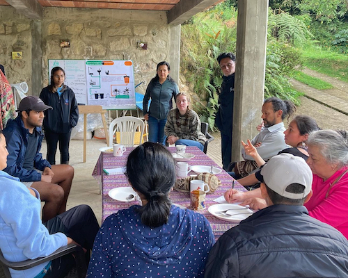
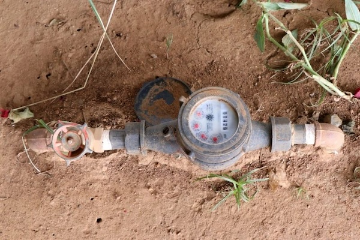
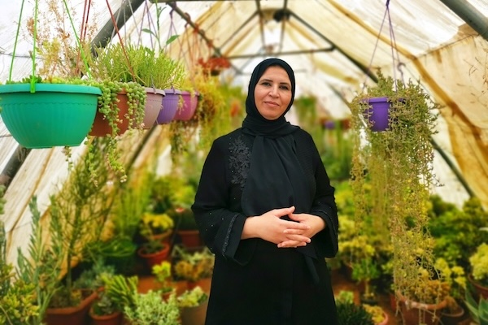

Home
Projects
Presentations
Work History
Neil Patel
WSSH Specialist @ DAI
Projects
Aquifer Characterization and Vulnerability Mapping for the Plaine du Nord-Massacre System in Haiti
USAID Fragile Waters
October 2024
A Deep Learning Approach to Water Point Detection and Mapping Using Street-Level Imagery in Lagos, Nigeria
MIT Senseable City Lab
July 2024

Data Collection and Monitoring for Vermifilter Toilets in Agua Bonita, Colombia
MIT D-Lab
August 2023

Impact Evaluation of Meter Replacements on Water Service Provider Revenue Collection in Kenya
USAID WASH-FIN 2
August 2023

Women and Water Conservation: Intra-Household Learning in Jordan’s Agriculture Sector
MIT Economics
May 2023
Strengthening Systems-Based Leak Prevention in Ciudad de Mexico Using Blockchain
UT Austin
November 2021